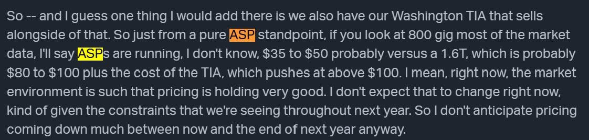
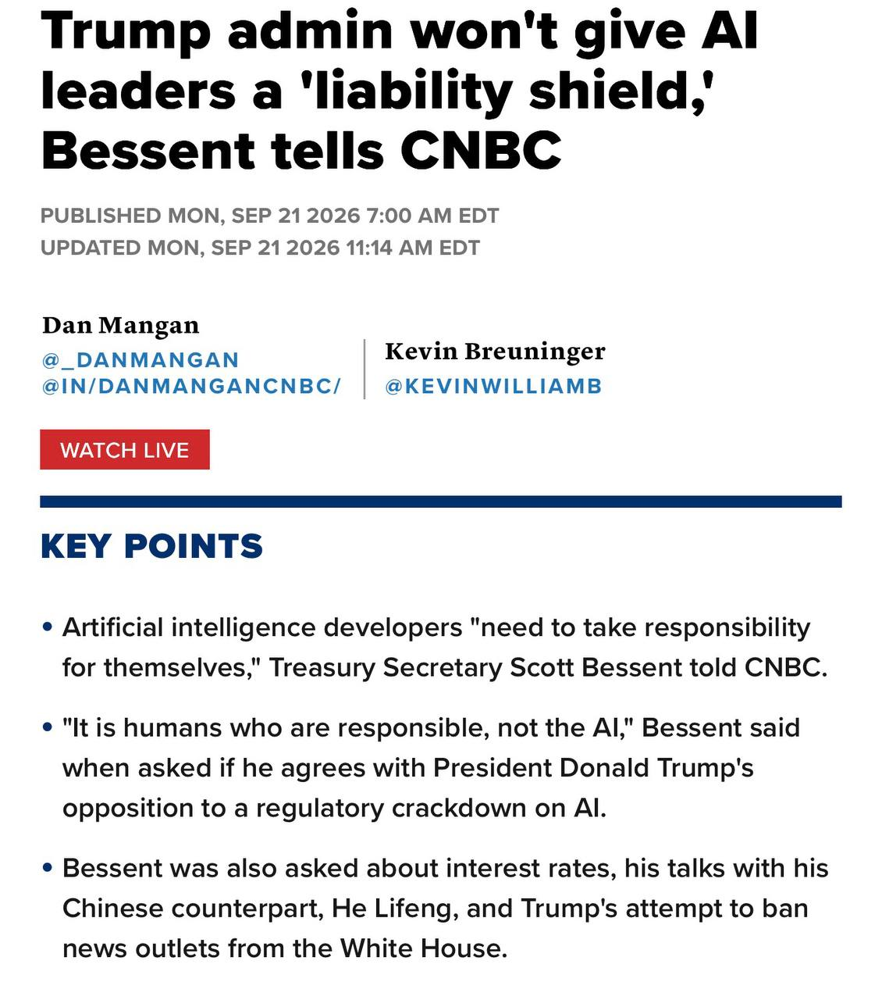

過去 26 小時共 4 則，兩個主題：MaxLinear 在花旗研討會談光通訊 DSP 漲價，以及美國財長貝森特表態不給 AI 公司「免責盾牌」。無集數推播或業配。
原文
MaxLinear @citi
- DSP 漲價且轉嫁得出去，公司說 "pricing is very firm, no doubt, you've seen prices increase this year"
- 被問到定價是抵銷成本還是高於成本時，開玩笑說「不知道誰在場」，再說 MaxLinear 的目標是拿到產品應有的價值，看來就是多漲
- 800G DSP ASP 約 $35 - 50；1.6T DSP 約 $80 - 100，加上 TIA 後超過 $100。不預期 2027 年底前價格會下降
- optical 交期 26 - 28 週，客戶已下 2027 整年訂單或至少給了全年 forecast
- 光通訊 DSP 全年營收指引中點 $2.2 億，他年初是說超過 1 億，連續幾 Q 上修
- 產品組合目前 70% 800G、30% 400G。400G 明年放緩，800G 今、明兩年續成長，2028 有爭議。1.6T 產品 Rushmore 客戶正在 qual，預計 2027 年中上市、2028 量產
- 市場由兩大玩家主導（Marvell 與 Broadcom），mxl 份額 5 - 7%，目標 3 年內到 20 - 25%，1.6T 世代是最大的跳升點，有夢最美
- 800G 方案功耗比競品低約 20%；產品線從 DSP 擴到 retimer、Washington TIA、driver
- 1.6T DSP 轉到 samsung 製造，因為整個產業被 TSMC 產能卡住，Samsung 晶圓供給不是問題，已就 forecast 與 ramp 溝通

圖為 MaxLinear 在研討會上的英文逐字稿截圖，內容是 800G ASP 約 35–50 美元、1.6T 約 80–100 美元，加上 Washington TIA 後超過 100 美元，並表示預期明年底前價格不會明顯下降。
講解
DSP（數位訊號處理器）是光模組裡的「翻譯官」：GPU 之間傳的是電訊號，光纖傳的是光，中間要靠 DSP 做調變、等化與錯誤校正，把高速訊號在雜訊裡還原出來。速率每翻倍（800G→1.6T），DSP 的難度與單價跟著跳，所以 ASP 從 35–50 美元升到 80–100 美元並不意外。TIA（轉阻放大器）則負責把光偵測器收到的微弱電流放大成可處理的電壓，是跟 DSP 配套賣的元件，兩者一起買時單一光模組的晶片內容價值就超過 100 美元。
這場講話的重點在「漲價轉嫁得出去」加上「交期 26–28 週、客戶下了 2027 全年訂單」。交期拉長代表供不應求，客戶為了卡位願意先給全年量，供應商的議價力就上來了。貼文裡「開玩笑說不知道誰在場」，指的是被問到漲價是為了抵銷成本還是賺更多時，高層在客戶可能在台下的場合下迴避正面回答——解讀為「多漲」是作者的推論，不是公司說的。
值得保留的地方有三個。第一，MaxLinear 目前份額只有 5–7%，市場由 Marvell 與 Broadcom 主導，「3 年內到 20–25%」是目標而非指引，作者自己也用「有夢最美」點破。第二，1.6T 的 Rushmore 還在客戶驗證階段，2027 年中才上市、2028 才量產，真正放量前還有驗證失敗或競品搶先的風險。第三，Samsung 代工是因為台積電產能被卡住的替代方案，好處是供給不成問題，但 Samsung 先進製程的良率與功耗表現一直是市場疑慮，會不會影響「功耗比競品低 20%」這個賣點，要看量產後的實際數據。另外，查證原始逐字稿時發現這場是 9 月 9 日的花旗 TMT 研討會，發言人是財務長 Steve Litchfield；公開資料寫的是「與 Samsung 合作製造」，不一定是從台積電「轉過去」，貼文的「轉到」一詞可能略有簡化。
原文
大家都琅琅上口這個時代，在一些 AI 已經做得很好的項目上之所以還需要人，就是要有可歸責的對象
沒道理社畜要扛，公司造成社會問題卻免責吧？
貝森特還是明白人，是人要負責不是 AI，工具是中性的，問題是人。下次發布「危險作品」前，可以先備妥理賠，敢發就敢扛
https://www.cnbc.com/amp/2026/09/21/treasury-bessent-cnbc-squawk-trump-bond-affordabilty.html

圖為 CNBC 2026 年 9 月 21 日報導截圖，標題為川普政府不會給 AI 業者「責任盾牌」。重點列出：財長貝森特表示 AI 開發者「需要自己負責」、「負責的是人，不是 AI」，並提到訪談也談到利率、與中國副總理何立峰的會談等。
講解
「責任盾牌」（liability shield）是指立法讓 AI 開發商對模型造成的損害免除或限縮法律責任，類似網路平台過去受 Section 230 保護、不必為使用者貼文負責的邏輯。AI 產業一直有人遊說爭取類似保護，理由是模型被使用者拿去做壞事，不該由開發商扛。貝森特在 CNBC《Squawk Box》上明確拒絕，說「負責的是人，不是 AI」，並直接點名近期的 Hugging Face 事件是 OpenAI 管理層的責任，不是「一堆 agent」的責任。
這裡有個容易忽略的政策脈絡：川普政府同時反對對 AI 加強監管。「不監管、也不給免責」合起來的意思是：政府不事前設規則，但出事後讓民事訴訟與既有法律去追究公司。對 AI 公司來說，這把風險從合規成本轉成了訴訟與賠償的尾部風險，也正是貼文說「先備妥理賠」的由來——實務上這會推動 AI 責任保險市場，以及企業在部署時保留「人在迴路」簽核，好讓責任有明確歸屬。
貼文的前半段（還需要人，是因為要有可歸責的對象）是作者自己的觀點，不是貝森特說的；貝森特的原話是在回答是否同意川普反對加強監管時表態。另外，一位財長在電視訪談中的表態不等於正式政策或立法，實際責任歸屬仍取決於國會與法院，後續走向還有變數。
註：這是雲端版流程的第一次測試執行，repo 裡沒有前一天的資料夾是因為雲端版今天才開始，不代表昨天漏抓。